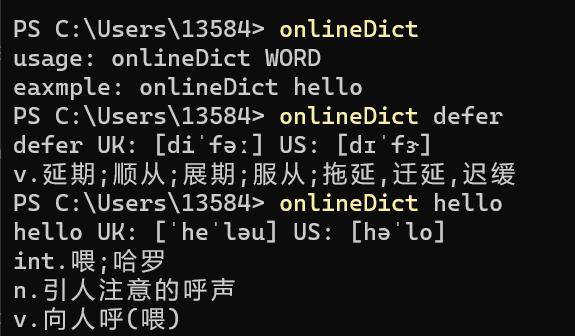

# golang - 入门 命令行词典
# golang 相关知识点
尝试了 goland 的基础语法，结构体使用，错误处理，基本的输入输出，命令行参数等。
体验了 go 自带的间结强大的 net 库，http 库等，可以非常轻松的进行 go 语言 struct 与 json 格式的序列化和反序列化。
# 效果

# 过程
首先对某翻译网站翻译的请求进行抓包，得到请求发出时的请求头。然后可以使用检查工具中的 copy as cURL 复制为 curl 命令
然后可搜索在线工具比如 curlconverter 将 curl 命令转化为 go 语言中发送 http 请求的代码。
还需要使用一个 go 语言自带的结构体保存返回的信息，由于返回的 json 字段很多，并且有嵌套，所以也可使用在线的 json 转 go 结构体工具。
然后主体部分就完成了，将其封装为 query 函数，接受一个需要查询的字符串 word，在 main 函数中调用。
然后使用 go build 直接编译成可执行文件，将其路径放入环境变量即可。
# 可改进之处
请求头里的 cookie 和其余信息都是硬编码的，但是翻译网站的反爬和鉴权措施一般不会很严格，但仍有可能需要定时修改代码。
# 代码
package main | |
import ( | |
"bytes" | |
"encoding/json" | |
"fmt" | |
"io" | |
"log" | |
"net/http" | |
"os" | |
) | |
type DictRequest struct { | |
TransType string `json:"trans_type"` | |
Source string `json:"source"` | |
UserID string `json:"user_id"` | |
} | |
type DictResponse struct { | |
Rc int `json:"rc"` | |
Wiki struct { | |
} `json:"wiki"` | |
Dictionary struct { | |
Prons struct { | |
EnUs string `json:"en-us"` | |
En string `json:"en"` | |
} `json:"prons"` | |
Explanations []string `json:"explanations"` | |
Synonym []string `json:"synonym"` | |
Antonym []string `json:"antonym"` | |
WqxExample [][]string `json:"wqx_example"` | |
Entry string `json:"entry"` | |
Type string `json:"type"` | |
Related []interface{} `json:"related"` | |
Source string `json:"source"` | |
} `json:"dictionary"` | |
} | |
func main() { | |
if len(os.Args) != 2 { | |
fmt.Fprintf(os.Stderr, `usage: onlineDict WORD | |
eaxmple: onlineDict hello | |
`) | |
os.Exit(1) | |
} | |
word := os.Args[1] | |
query(word) | |
} | |
func query(word string) { | |
client := &http.Client{} | |
//var data = strings.NewReader(`{"trans_type":"en2zh","source":"good"}`) | |
request := DictRequest{TransType: "en2zh", Source: word} | |
buf, err := json.Marshal(request) | |
if err != nil { | |
log.Fatal(err) | |
} | |
var data = bytes.NewReader(buf) | |
req, err := http.NewRequest("POST", "xxxx", data) | |
if err != nil { | |
log.Fatal(err) | |
} | |
req.Header.Set("authority", "xxxx") | |
req.Header.Set("accept", "application/json, text/plain, */*") | |
req.Header.Set("accept-language", "zh-CN,zh;q=0.9,en;q=0.8,en-GB;q=0.7,en-US;q=0.6") | |
req.Header.Set("app-name", "xy") | |
req.Header.Set("content-type", "application/json;charset=UTF-8") | |
req.Header.Set("device-id", "89b4990d1ee4c5a8e30571cb7ac33c49") | |
req.Header.Set("origin", "xxxx") | |
req.Header.Set("os-type", "web") | |
req.Header.Set("os-version", "") | |
req.Header.Set("referer", "https://fanyi.caiyunapp.com/") | |
req.Header.Set("sec-ch-ua", `"Not.A/Brand";v="8", "Chromium";v="114", "Microsoft Edge";v="114"`) | |
req.Header.Set("sec-ch-ua-mobile", "?0") | |
req.Header.Set("sec-ch-ua-platform", `"Windows"`) | |
req.Header.Set("sec-fetch-dest", "empty") | |
req.Header.Set("sec-fetch-mode", "cors") | |
req.Header.Set("sec-fetch-site", "cross-site") | |
req.Header.Set("user-agent", "Mozilla/5.0 (Windows NT 10.0; Win64; x64) AppleWebKit/537.36 (KHTML, like Gecko) Chrome/114.0.0.0 Safari/537.36 Edg/114.0.1823.82") | |
req.Header.Set("x-authorization", "token:xxxx") | |
resp, err := client.Do(req) | |
if err != nil { | |
log.Fatal(err) | |
} | |
defer resp.Body.Close() | |
bodyText, err := io.ReadAll(resp.Body) | |
if err != nil { | |
log.Fatal(err) | |
} | |
if resp.StatusCode != 200 { | |
log.Fatal("bad StatusCode", resp.StatusCode, "body", string(bodyText)) | |
} | |
var dictResponse DictResponse | |
err = json.Unmarshal(bodyText, &dictResponse) | |
if err != nil { | |
log.Fatal(err) | |
} | |
//fmt.Printf("%+v\n", dictResponse) | |
fmt.Println(word, "UK:", dictResponse.Dictionary.Prons.En, "US:", dictResponse.Dictionary.Prons.EnUs) | |
for _, item := range dictResponse.Dictionary.Explanations { | |
fmt.Println(item) | |
} | |
//fmt.Printf("%s\n", bodyText) | |
} |